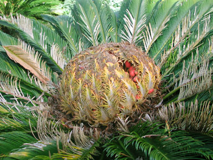

Previous || Next || Return to Mystery Plants || USC Herbarium
This Week's Mystery Plant | Dr. John B. Nelson Curator, USC Herbarium |
|
First thing is, it's not a palm, although it resembles one. This is one of about 200 species of plants, widely distributed around the world, that are collectively called "cycads". These are seed-producing plants, but they don't produce any flowers. This puts them in the large group called "Gymnosperms", nearly all of which produce seed-bearing cones, and which includes pines, cedars, spruces, cypresses, and their relatives. (Gymnosperms dominated the green landscapes of the world during the Age of the Dinosaurs, 180 million years, or so, ago. At this time there weren't any flowering plants at all: flowers are a relatively recent botanical "invention".) Our Mystery cycad is native to southern Japan, and it is grown widely around the world now as an ornamental, especially in warmer climates. These plants grow very slowly, eventually making a trunk. Particularly old plants may be up to 4 or 5 feet tall. The leaves are very attractive, dark green, and persisting for considerable time. New leaves are produced all at once in what is called a "flush" of growth, at the top of the plant. As with all cycads, the individual plants are either male or female. Male plants will produce one or more long, pointed, yellow cones that shed plenty of pollen. A female plant will produce a massive, cabbage-like cone at the top. Attractive, bright red-orange seeds, about the size of a large plum, will develop in the female cone. Old plants will produce offsets (or "pups") at their base, which is an additional way the plants can be propagated. In South Carolina, this plant is usually grown in pots and brought indoors during the winter, as the species might be a bit cold sensitive. Nevertheless, it will grow planted outside in our state, even as far inland as Columbia, especially if given some protection. (I have to confess that the female plant in the photo, which shows the cone and seeds, was photographed down in Florida.) |
 Photo by John Nelson |